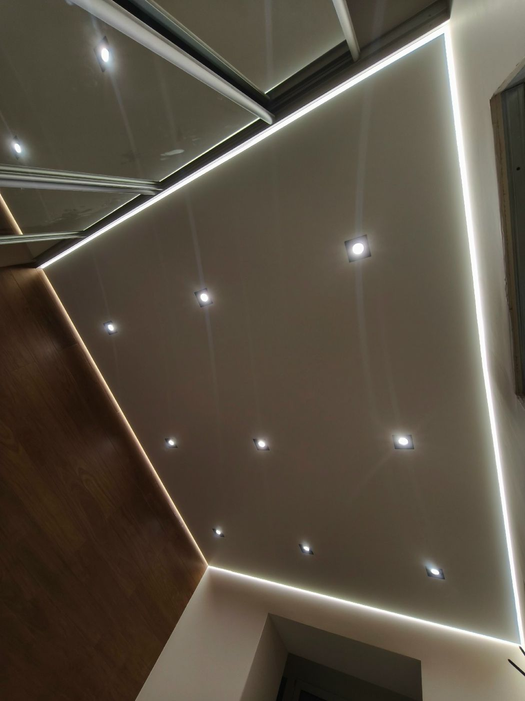
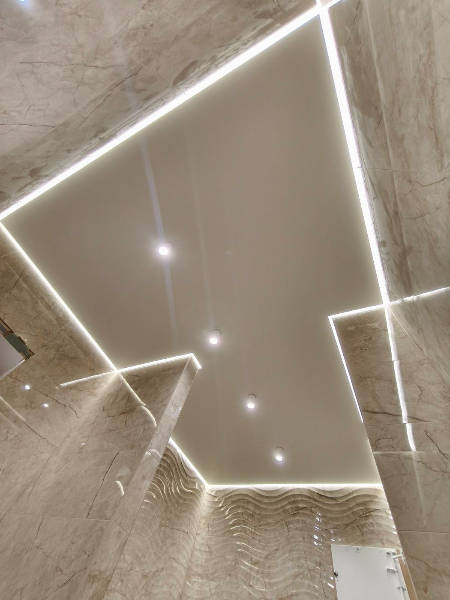
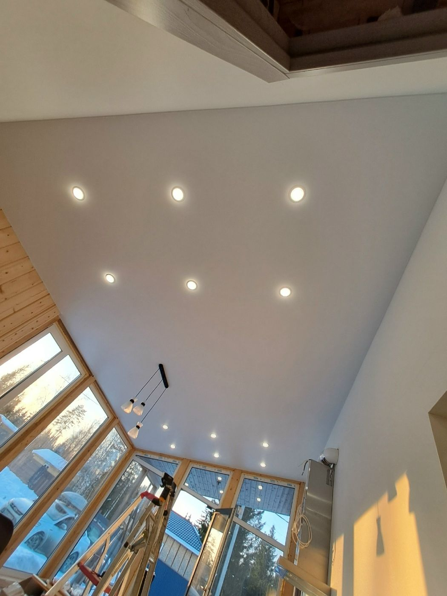

Потолки, в которых свет встроен в архитектуру
Монтируем натяжные потолки с теневым и парящим профилем, световыми линиями и скрытыми карнизами в квартирах и домах СПб и ЛО. За 2–4 часа, без пыли.
- ★ 5,0в VK, 4 отзыва
- 5 летмонтируем потолки
- от 800 ₽за м² полотна
- 0 ₽лазерный замер


- Монтаж
за 2–4 часа - Работаем с пылесосом,
убираем и вывозим мусор - Официальный договор
и гарантия - Защита от затопления
до 100 л/м²
Услуги и цены
От ровного матового полотна до света, встроенного в потолок.
Соберите потолок
Задайте размеры комнаты и включите свет. План и стоимость меняются вместе.
Так выглядит в интерьере
Наши объекты
Работы в деталях
Как работаем
- Звонок или заявка
Расскажите, где объект и какой потолок задумали.
- Замер и смета
Приедем бесплатно, измерим комнату лазером и посчитаем материалы.
- Договор
Согласуем смету, схему света и дату монтажа.
- Монтаж
Установим потолок за 2–4 часа. Инструмент подключим к пылесосу.
- Уборка и гарантия
Проверим свет, уберём за собой и вывезем мусор.

Максим и Даниил,
бригада RAUM
Уже 5 лет монтируем потолки в Петербурге и Ленинградской области.
Работаем в новостройках, жилых квартирах и загородных домах. На замере вместе решаем, где пройдёт световая линия, как спрятать карниз и какой профиль подойдёт к стенам.
Отзывы заказчиков
★ 5,0 в VK, 4 отзываХочу поблагодарить Даниила и Максима за качественную работу! Сделали скрытые карнизы, один из них с подсветкой, установили люстры и светильники и все это в готовый натяжной потолок от застройщика. Сделали быстро и очень красиво! Безумно все понравилось) В дальнейшем планируем еще обратиться, а так же будем рекомендовать знакомым) После себя оставили порядок! Еще раз спасибо!
Максимально довольны работой! Получилось все, как хотелось и даже лучше) Теперь рекомендую ребят всем знакомым Даже воплотили нашу идею с качелью)
Максим с ребятами делает для нас потолки уже во второй квартире, оба раза все быстро и качественно! Карнизы получились супер! Благодарю за проделанную работу! Однозначно рекомендую обращаться!
Максим! Хочу поблагодарить вас за такой профессиональный подход к своей работе! Я безумно довольна этой красотой. Делался потолок в комнате 18 кВ.м. Максим приехал на замер, предложил разные варианты. Работа была выполнена быстро и качественно. Удивило, что даже о крючках к карнизу мастер подумал. Ну а цена обрадовала еще больше. Еще раз огромное спасибо.
Где работаем
Выезжаем на замер по Санкт-Петербургу и Ленинградской области.
На карте — жилые комплексы, где мы уже монтировали потолки.
Открыть в Яндекс КартахЧастые вопросы
Сколько длится монтаж?
Обычно 2–4 часа. Время зависит от площади, числа светильников и сложности линий. Срок согласуем после замера.
Будет ли пыль?
Подключаем инструмент к пылесосу. После монтажа убираем помещение и выносим мусор.
Можно ли переделать потолок от застройщика?
Да. В ЖК Фотограф мы меняли потолки от застройщика, устанавливали теневой и парящий профиль, добавляли световые линии и скрытые карнизы.
Что выбрать — теневой или парящий профиль?
Теневой профиль оставляет узкую тёмную щель вдоль стены. В парящем профиле спрятана светодиодная лента: при включении по периметру появляется мягкий свет.
Выдержит ли потолок затопление?
Потолок из ПВХ может удержать до 100 л воды на квадратный метр. При затоплении отключите электричество в комнате и вызовите мастера, чтобы слить воду.
Сколько стоит замер?
Замер бесплатный. Приедем с лазерным дальномером, снимем размеры и составим смету.
Бесплатный
лазерный замер
Оставьте номер. Уточним адрес, обсудим потолок и договоримся о времени.
+7 952 362-01-28 Максим